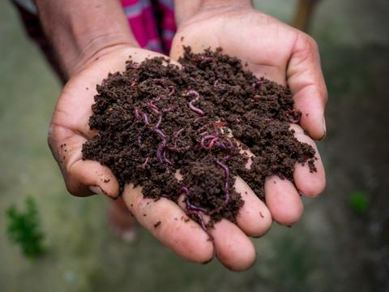

NURSERY
All You Need To Know About Using Vermicompost For Your Plants
Do you know that plants before becoming our source nutrition require a great deal of nutrition too? Yes. Just like human bodies require an apt amount of nutrients and minerals to grow so does plants.
The vibrant plant life above ground is strengthened not by the gardener's hands, but by the billions of microbes and micronutrients in the soil below. To have healthy plants, you must first strengthen the plant's foundation, which means you must have healthy soil.
But how do you start with having a healthy soil? Well there plenty of ways to do that but today we are going to discuss an organic fertilizer, vermicompost.
So what is vermicompost?
Vermicompost is the end result of composting organic material with various types of worms, such as red wigglers or earthworms, to produce a homogeneous blend of decomposed vegetable and food waste, bedding materials, and manure.
When you start the worm farming, the food particles consumed by a red wiggler transform into a nutrient-rich cast containing all of the necessary ingredients for plants of all types to grow to their full potential. Casts are 5 to 11 times richer in available nitrogen, phosphorus, calcium, and magnesium than the organic matter the worm consumes to produce them, according to the USDA.
When worm castings or vermicompost as fertilizers for your plants, it slowly release a perfectly balanced blend of nutrients that can stimulate growth and healing while also increasing flower and fruit production.
Vermicompost also creates an ideal environment for strong root growth and the absorption of growth-promoting building blocks in each plant. Worm compost can even aid in disease prevention! Because this stuff is so potent, a little goes a long way.
Furthermore, finished vermicompost has all of the properties of humus soil, including the ability to retain water while still allowing for proper drainage and oxygen gaps. This worm shit is gold !!!
 Login
Login
 Cart
Cart